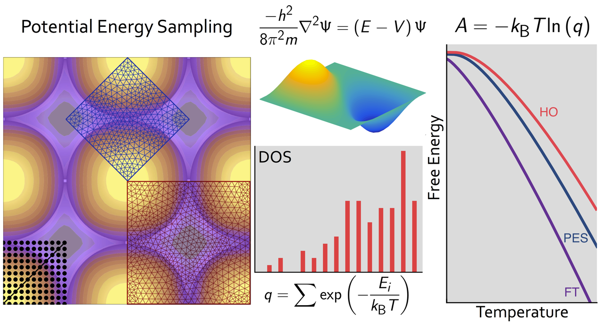

Accurate Free Energy Models in Catalysis

Adsorbate free energies are fundamental quantities in the microkinetic modeling of catalytic reactions. In first-principles modeling, finite-temperature free energies are generally obtained by combining density functional theory energies with standard approximate models, such as the harmonic oscillator, the hindered translator, or the two-dimensional ideal gas. We calculate accurate free energies directly from first-principles potential energy surfaces combined with exact quantum mechanical solutions for the translational energy states to benchmark the reliability of common approximations. Through a series of case studies of monatomic adsorbates on metal surfaces, we show that no one free energy model performs satisfactorily in all cases. Moreover, even combinations of different approximations sometimes deviate significantly from the free energies calculated by our first-principles approach. Using observations from these case studies, we discuss how a full quantum mechanical approach can be extended to calculate accurate free energies for arbitrary adsorbate potential energy surfaces at computational cost similar to standard models.
Related Publications
- A. Bajpai# , P. Mehta# , K. Frey, A. Lehmer, W.F. Schneider, Benchmark First-Principles Calculations of Adsorbate Free Energies. ACS Catalysis, 2018, 8, 1945 (# = co-first author) DOI: 10.1021/acscatal.7b03438
Related Poster

Comments
Comments powered by Disqus